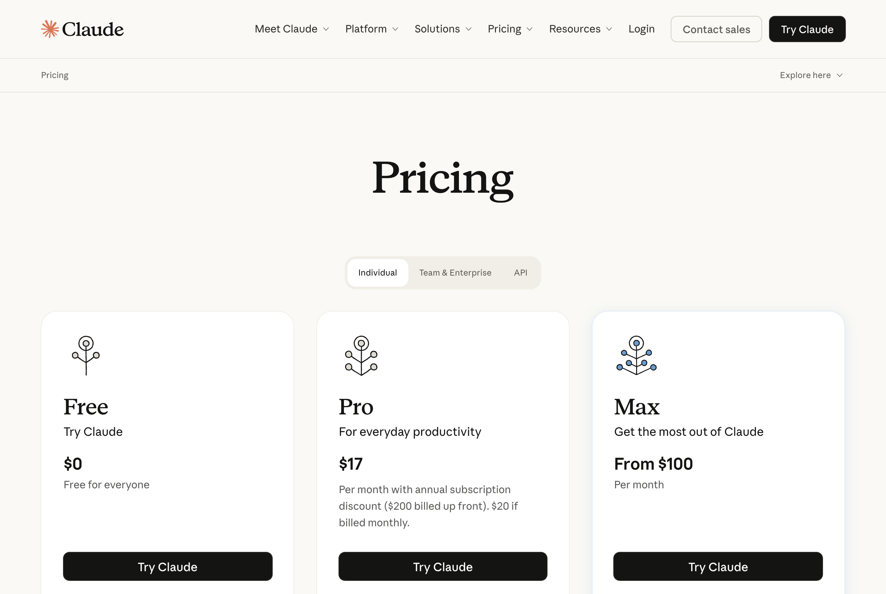
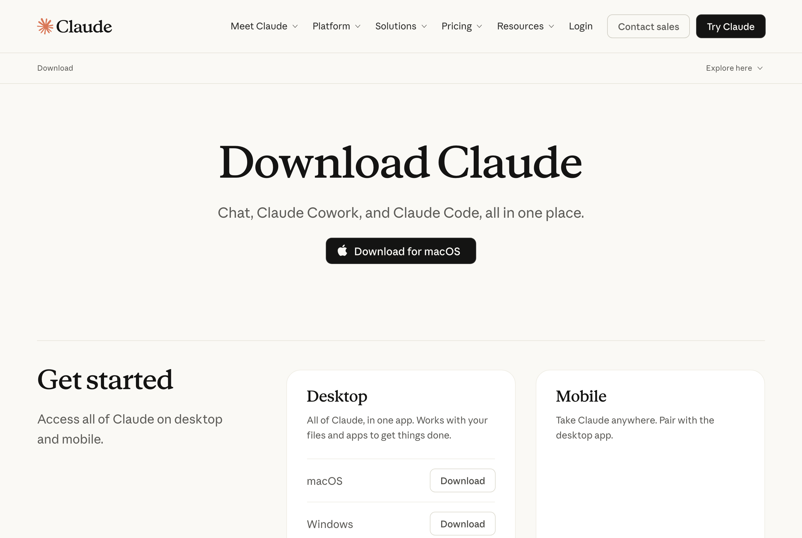
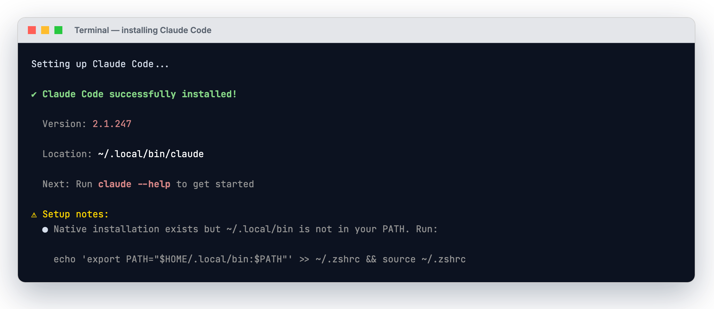
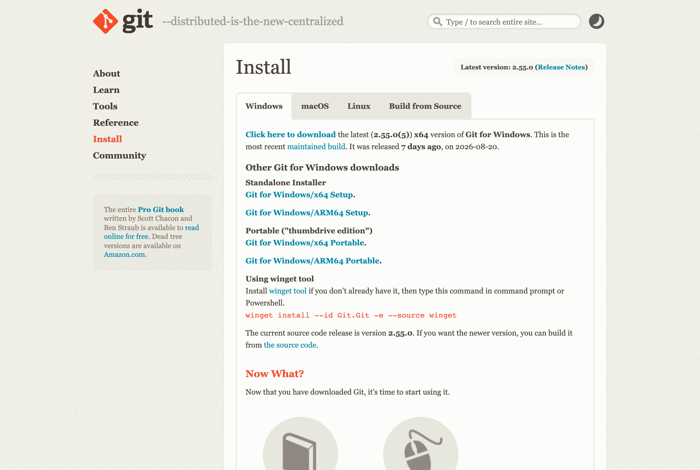
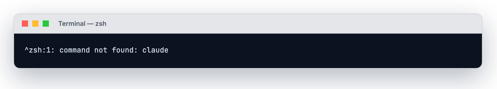
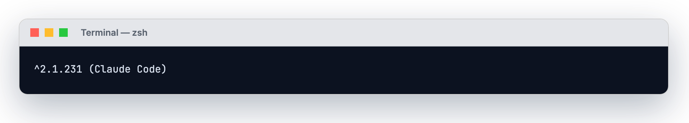
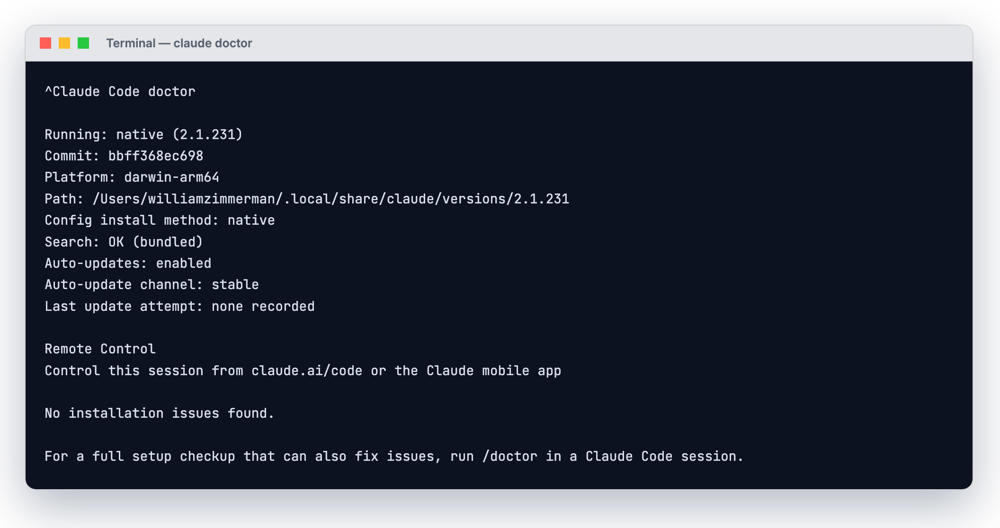
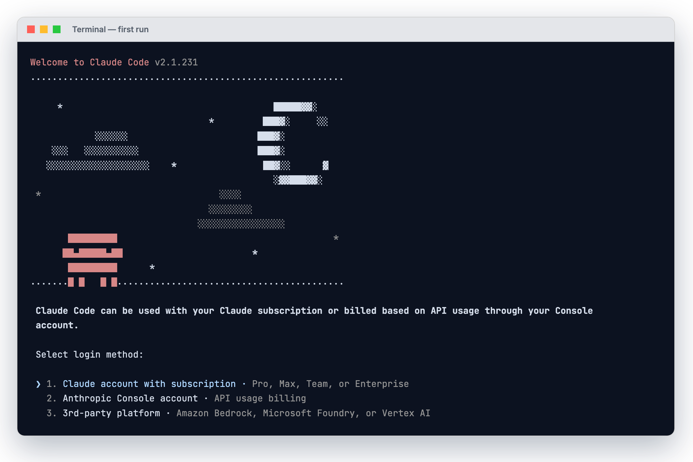
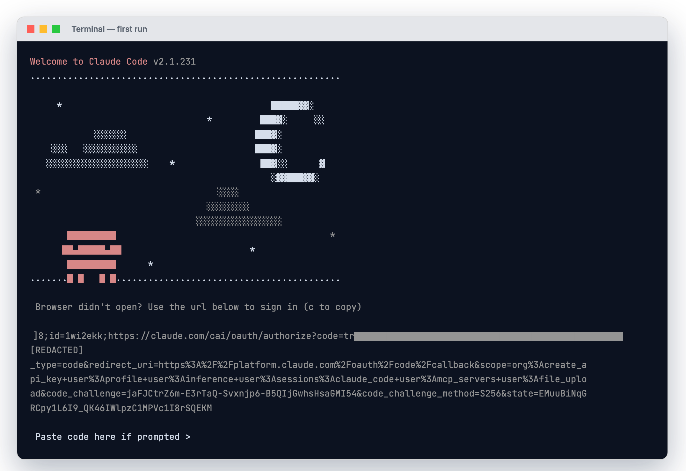
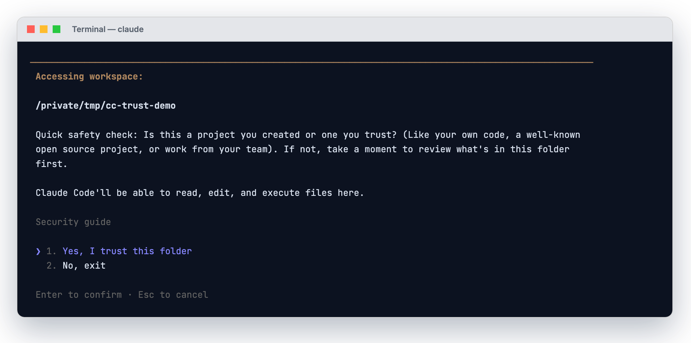

Glide Slope AI · August 2026
Everything you need to go from nothing installed to your first working session. One idea per slide. No prior terminal experience assumed.
Before we start
You will not break anything
Claude Code asks permission before it touches a single file. Nothing on this walkthrough is destructive, and every step is reversible.
The destination
We'll walk this together on a screen share too. This deck is so you can move at your own pace before and after that call.
Part One
Two minutes of orientation, so the install steps make sense when we get to them.
The core idea
It is not a chat window that hands you text to copy and paste.
Claude Code reads the files on your computer, edits them, runs commands, and works across a whole folder. You describe an outcome in plain English, and it does the work on your actual machine — then shows you exactly what it changed.
If you remember one thing
A very capable assistant that has been given a keyboard and access to your folders — and asks permission before it touches anything.
A common misconception
A great deal of what it is good at has nothing to do with software:
Part Two
Two things to check. The first one is the single most common reason a setup stalls halfway through.
Claude Code needs Pro, Max, Team, or Enterprise — or Console credits.
The free Claude.ai plan does not include Claude Code
If you are on the free plan, the install will appear to work and then refuse to run. Sort this out before you go any further.

The live pricing page.
Plans: claude.com/pricing · Console: platform.claude.com
⚠Verified 27 Aug 2026. Anthropic changes these pages often — if the live page looks different from this screenshot, trust the live page.
| macOS | 13.0 (Ventura) or newer |
| Windows | 10 version 1809+, or Server 2019+ |
| Linux | Ubuntu 20.04+, Debian 10+, Alpine 3.19+ |
| Memory | 4 GB RAM minimum |
| Processor | x64 or ARM64 |
| Network | Internet connection required |
Check your macOS version now, not later
Apple menu → About This Mac. If it is older than macOS 13.0, run Software Update first. Otherwise the install appears to succeed and then fails with a confusing dyld error.
Ignore the internet on this one
Most tutorials online get this wrong and send people on a 40-minute detour. Straight from Anthropic's own documentation:
Why nearly everyone believes you need Node
Because you used to. Claude Code originally shipped only as npm install -g @anthropic-ai/claude-code, which needs Node 22+. That was the main route for most of its life, so almost every tutorial still teaches it. The native installer replaced it. If a video tells you to install Node, Python and Git and run PowerShell as Administrator, it is teaching the old way — you can skip all of it.
If you read one slide, read this one
Nearly every failed setup is one of these. None means Claude Code is broken.
Mistake 1
Tell: install works, then it asks you to upgrade.
Fix: needs Pro, Max, Team, Enterprise, or Console credits. Sort the plan first — the top reason setups stall.
Mistake 2
command not foundTell: "successfully installed," then claude isn't recognised.
Fix: nothing failed — the folder isn't on your PATH. One line fixes it, and the installer prints that line for you.
Mistake 3
Tell: 40 minutes installing Node, Python and Git before anything else.
Fix: skip it. One command installs Claude Code. Never sudo npm install -g.
One edge case
The installer downloads from downloads.claude.ai. If your company runs a proxy or a strict firewall, flag it to IT before you begin — it is much faster than debugging a mystery failure afterwards.
Claude Code is also only available in Anthropic-supported countries.
Part Three
There are two ways in. Almost every tutorial online picks one and never tells you the choice exists.
Both run the same engine, the same model, and the same settings. What differs is the interface — and whether you can script it. Pick one now; adding the other later takes about ninety seconds.
Start here if you're non-technical
A normal application with buttons, panels, and a visual review screen. No terminal at any point.
Start here if you live in a terminal
The full command-line version. More power, scriptable, and what most technical documentation assumes.
claudeIf you're on the fence
Take the Desktop App.
It is the shorter road to a working setup, and nothing you do now locks you out of anything. Adding the terminal version later takes about ninety seconds.
Where to go next in this deck
Desktop App → the next five slides.
Terminal → skip ahead to Part Four B using the slide overview (press O).
The three questions everyone asks here
Question 1
No. Pick one and stop. The Desktop app has Claude Code built in — installing it does not require the terminal version, and you can ignore the whole terminal section.
Question 2
For the actual work, no — same engine, same model, same abilities. It is more powerful for automation: you can pipe things into it and run it on a schedule.
Question 3
By how you like to work, not by capability. Buttons and a visual diff → Desktop. Already live in a terminal, or you want to script it → Terminal.
The one thing that is genuinely different
The Desktop app does not install the claude terminal command. So claude --version and claude doctor — and anything you pipe — only exist if you also do the Terminal install. Adding it later takes about ninety seconds.
Part Four A
Five steps, no terminal. If you chose the Terminal path, jump ahead to Part Four B.
Go to claude.com/download and pick the build for your machine.
| macOS | One universal build — works on both Intel and Apple Silicon |
| Windows (x64) | The right choice for almost every PC |
| Windows ARM64 | Only for Surface Pro X and similar ARM machines |

The live download page — pick the build that matches your machine.
Claude Code is built into this app. There is nothing else to install.
⚠Verified 27 Aug 2026. Anthropic changes these pages often — if the live page looks different from this screenshot, trust the live page.
Launch Claude from your Applications folder on macOS, or the Start menu on Windows. Sign in with your Anthropic account.
This is the paid-plan checkpoint
Sign in with the account that holds your Pro, Max, Team, or Enterprise subscription. If you sign in with a different email that's on the free plan, the next step will ask you to upgrade.
It sits at the top centre of the window, alongside Chat and Cowork.
Illustration of the layout — your window will show your own account and projects.
If clicking Code asks you to upgrade
Your account is still on a free plan. Subscribe and come back. If it asks you to sign in online instead, complete that and restart the app.
Local means Claude works on your machine, on your real files. Click Select folder and choose a directory.
Start with a small folder you know well
It is the fastest way to see what this thing actually does — and the easiest way to sanity-check its work, because you already know what's in there.
Windows only
Local sessions need Git for Windows installed. Download it from git-scm.com/downloads/win and click Next through every screen — the defaults are correct. Most Macs already include Git, so Mac users skip this.
Worth understanding before you click
Claude sees that folder and everything inside it.
Subfolders included, all the way down. That is exactly what makes it useful — and exactly why you should point it at a project folder rather than your entire home directory on day one.
Anything plain-English will do. Claude proposes changes and — depending on your permission mode — either applies them or waits for your approval.
what's in this folder, and what does this project do?
That's it. You are running.
The setting that matters most
This governs how much Claude does before checking with you. It is in the selector next to the send button, and you can change it at any moment.
| Mode | What happens | Use when |
|---|---|---|
| Manual | Claude proposes each change and waits. Your files are untouched until you accept. | You're new, or the work is delicate |
| Auto | A classifier reviews actions in the background and blocks risky ones instead of asking you. | Day-to-day work, once you trust it |
| Accept edits | File edits are auto-accepted for faster iteration. | Rapid back-and-forth on one file |
| Plan | Claude proposes an approach and edits nothing at all. | Before any large or risky change |
Our recommendation
Start in Manual for your first few sessions.
Watching it ask permission — and seeing exactly what it wanted to do before it did it — is how you build an accurate sense of what this thing is capable of. Switch to Auto once that instinct is there.
Desktop path complete — you are running. Verify the Desktop way: open the Code tab, pick a folder, start a session. Part Five uses claude --version and claude doctor, which are Terminal-only — the Desktop app does not install the terminal command. Carry on to Part Four B only if you also want the CLI.
Part Four B
One command. The next few slides show it on Mac, then on Windows.
Press Cmd + Space to open Spotlight, type Terminal, press Enter.
yourname@MacBook ~ %
A window with a blinking cursor appears. That's it — that's the terminal. Nothing is running yet.
On Linux: press Ctrl + Alt + T, or search "Terminal" in your application menu.
Copy this, paste it into the terminal with Cmd + V, and press Enter.
curl -fsSL https://claude.ai/install.sh | bash
On Linux, paste with Ctrl + Shift + V. This same command works on macOS, Ubuntu/Debian, and WSL 2. Alpine needs extra packages first, and WSL 1 may need Anthropic's documented workaround.
Step 2 continued
Text scrolls past as it works. After a few seconds you'll see this:

Real output from the official installer. Note it also warns you about PATH — that is the next section.
Native installs keep themselves current
This version updates itself in the background. You will not need to reinstall to get new features.
Windows has two command windows that look nearly identical and take different commands. Nearly every Windows install failure starts here.
PowerShell — use this one
The prompt starts with PS:
PS C:\Users\YourName>
CMD — different command
No PS at the front:
C:\Users\YourName>
Open PowerShell with Win + X → Windows PowerShell (or Terminal).
Do not open the one marked (x86)
On a 64-bit machine that entry runs a 32-bit process and the install will refuse with "Claude Code does not support 32-bit Windows."
In PowerShell:
irm https://claude.ai/install.ps1 | iex
PS C:\Users\YourName> irm https://claude.ai/install.ps1 | iex Downloading Claude Code... Claude Code successfully installed! PS C:\Users\YourName>
If you are in CMD instead, use this one:
curl -fsSL https://claude.ai/install.cmd -o install.cmd && install.cmd && del install.cmd
If it errors immediately
These two are mirror images of each other. Neither means the install failed — you just ran the wrong version of the command.
'irm' is not recognized
You are in CMD but ran the PowerShell command.
Fix: switch to PowerShell (Win+X), or use the CMD command instead.
The token '&&' is not a valid statement separator
You are in PowerShell but ran the CMD command.
Fix: use irm https://claude.ai/install.ps1 | iex
Recommended, not required
Git for Windows gives Claude Code a proper shell. Without it, it falls back to PowerShell — which works, just less well.

The live download page.
Already have it? Skip. Not sure? Install it anyway — reinstalling causes no harm.
⚠Verified 27 Aug 2026. Anthropic changes these pages often — if the live page looks different from this screenshot, trust the live page.
Only if your team already standardises on one
The command on the previous slides is the recommended route. These alternatives exist for teams with existing package-management standards.
| Method | Command | Auto-updates? |
|---|---|---|
| Homebrew macOS | brew install --cask claude-code | No |
| WinGet Windows | winget install Anthropic.ClaudeCode | No |
| npm any platform | npm install -g @anthropic-ai/claude-code | Manual upgrade |
The auto-update trap nobody mentions
Homebrew and WinGet installs do not update themselves. If you go this route, run brew upgrade claude-code or winget upgrade Anthropic.ClaudeCode periodically, or you will quietly fall months behind.
One hard rule
Never run sudo npm install -g
It creates permission problems that are genuinely painful to unwind, and it is a real security risk. Anthropic's documentation warns against it explicitly.
If you hit permission errors with npm, fix the npm prefix instead of reaching for sudo.
For the record, on npm
You may see videos claiming the npm install is "deprecated." It is not. It is still documented and supported — it needs Node 22+ and installs the same program. The native installer is simply recommended, not the only supported route.
Part Four C · The most important slides in this deck
The installer prints "successfully installed." Then you type claude and the computer says it has never heard of it. Here is exactly what that means and how to fix it in one line.
Recognise this

A real reproduction — the shell genuinely could not find claude.
On Windows the wording differs slightly: 'claude' is not recognized as an internal or external command.
Do not reinstall
This does not mean the install failed.
Claude Code is on your machine. It sits at ~/.local/bin/claude on macOS and Linux, or %USERPROFILE%\.local\bin\claude.exe on Windows. Your shell simply does not know to look in that folder yet.
That list of folders your computer searches when you type a command is called your PATH. We are about to add one folder to it. That is the entire fix.
Paste both lines. The first adds the folder permanently; the second applies it to the window you're in right now.
echo 'export PATH="$HOME/.local/bin:$PATH"' >> ~/.zshrc source ~/.zshrc
Then type claude again. It will work.
On Linux, the default shell is usually Bash — use ~/.bashrc in place of ~/.zshrc in both lines.
Paste this into PowerShell:
$currentPath = [Environment]::GetEnvironmentVariable('PATH', 'User')
[Environment]::SetEnvironmentVariable('PATH', "$currentPath;$env:USERPROFILE\.local\bin", 'User')Or do it through the interface: System Environment Variables → Path → New, and add %USERPROFILE%\.local\bin.
The step people skip
On Windows, close your terminal completely and open a new one.
The Windows environment-variable change does not reach a window that is already open — and that one detail causes an enormous share of "I did the fix and it still doesn't work." On macOS you can skip this: the source ~/.zshrc line already applied the change to the window you are in.
Still missing after a fresh window?
Check whether the file actually exists — ~/.local/bin/claude on macOS/Linux, %USERPROFILE%\.local\bin\claude.exe on Windows. If it does not, the install genuinely did not finish — run the install command again.
Part Five
Thirty seconds that saves you an hour later. Almost no tutorial includes this step.
claude --version
A working install prints a version number followed by (Claude Code):

Real output on a working install.
Your number will differ — Claude Code ships updates constantly. Any version number confirms the program is installed and on your PATH. Run claude doctor next to check configuration and health.
A full read-only diagnostic — install health, config errors, suggested fixes. It starts no session and changes nothing.
claude doctor

Real diagnostic output.
Learn this one now, use it later
When something breaks in three weeks, this tells you what broke instead of leaving you guessing.
Part Six
A one-time step. Your credentials are stored afterwards.
claude
On first use you pick a login method, then a browser opens. One-time step.

The real first-run screen. Note the plans listed — no free tier.
Common on locked-down machines
Common on remote machines and corporate setups. Not an error — you finish the same flow by hand:

Real screen. URL blacked out — it was a live one-time sign-in link.
Expected a browser and got a key prompt instead?
If ANTHROPIC_API_KEY is set, Claude Code skips the browser and asks you to approve that key instead.
Part Seven
Installed and logged in. Now let's actually use it.
cd /path/to/your/project claude
Replace /path/to/your/project with your real folder.
Shortcut worth knowing
Type cd (with a space), then drag the folder from Finder or File Explorer straight into the terminal window. It fills in the path for you — no typing, no typos.

The real prompt — read it carefully before answering.
Answering yes lets Claude read, edit, and execute files in that folder — and every subfolder inside it.
Before asking for changes, get it oriented. Claude reads your files as needed — you don't attach anything.
what does this project do?
explain the folder structure
what technologies does this project use?
add a hello world function to the main file
In your first session Claude asks before each change. Select Yes to approve.
After that first session, terminal sessions on Pro, Max, and Team plans start in Auto mode, where a classifier reviews actions instead of you. Press Shift + Tab at any time to cycle permission modes.
If you have nothing to point it at
make me a simple webpage that says hello world
look at the screenshots on my Desktop and rename them based on what's in each image
I want to build a personal budget tracker. What would I need?
Terminal survival kit
/ to see everything available. Tab completes, and ↑ walks back through your history.exit to leave — or press Ctrl + D twice on an empty prompt.Part Eight
The difference between a frustrating hour and a useful one is almost never the tool. It's the ask.
| Principle | In practice |
|---|---|
| Be specific | Not "fix the bug" — instead: "fix the login bug where users see a blank screen after entering wrong credentials" |
| Break big work into steps | "1. create a table for user profiles 2. create an endpoint to get and update them 3. build a page where users can edit their information" |
| Let it explore first | Ask it to read the folder before you ask it to change anything. Context bought up front pays for itself. |
| Talk to it like a colleague | Describe the outcome you want, not the keystrokes you imagine it needs. It figures out the path. |
The mental shift
Describe the outcome, not the keystrokes.
You are not operating software. You are briefing someone competent who happens to work very fast and has no idea what you already know. Tell them what "done" looks like.
Part Nine
Two short lists. You will use maybe five of these regularly.
Typed in your terminal, to start Claude Code
| Command | What it does |
|---|---|
claude | Start an interactive session |
claude "task" | Start a session with an opening prompt |
claude -p "query" | Run a single query, print the answer, exit |
claude -c | Continue the most recent conversation in this folder |
claude -r | Resume a previous conversation from a list |
claude --version | Print the installed version |
claude doctor | Print installation and configuration diagnostics |
claude update | Apply an update now instead of waiting |
Typed inside a running session
| Command | What it does |
|---|---|
/help | Show available commands |
/clear | Clear the conversation and start fresh |
/login | Switch accounts or re-authenticate |
/config | Change settings, including the auto-update channel |
/exit | Leave Claude Code (or Ctrl+D twice) |
When in doubt
Type / and read the list. It is always current, which is more than any slide can promise.
Part Ten
Nearly every failed install is one of six things. Match the error text you're actually seeing.
| What you see | What it means & the fix |
|---|---|
command not found: claude | PATH, not a failed install. See the fix slides in Part Four C. |
'irm' is not recognized | You're in CMD running the PowerShell command. Switch shells. |
token '&&' is not valid | You're in PowerShell running the CMD command. Use the irm line. |
dyld: ... built for Mac OS X 13.0 | Your macOS is too old. Software Update, then reinstall. |
HTML in your terminal, or 403 | The URL returned a web page. Retry; if it persists, check your network and region, then use Homebrew on macOS or WinGet on Windows. |
does not support 32-bit Windows | You opened PowerShell (x86). Open the one without (x86). |
If the download itself is blocked
First find out whether you can reach the download host at all. A first line showing 200 means you're through:
curl -sI https://downloads.claude.ai/claude-code-releases/latest
403 usually means a proxy or filter is blocking it. 5xx is normally temporary — wait and retry.
On Windows PowerShell, type curl.exe explicitly — PowerShell aliases curl to something that rejects these flags.
If none of that fits
claude doctor
Run the built-in diagnostic first. It names the problem far more precisely than guessing does.
Then check Anthropic's installation troubleshooting guide, which has an error-to-fix lookup covering every documented failure.
And the escape hatch
If the terminal keeps fighting you, the Desktop app sidesteps this entire class of problem. No PATH, no shell, nothing to configure. There is no prize for winning the terminal argument.
Part Eleven
You're installed and running. These are the things that actually change how much you get out of it.
The highest-leverage thing you can do
Drop a file called CLAUDE.md in your project folder and Claude reads it at the start of every session. Standards, decisions, preferences, things it got wrong last time.
This is the single biggest quality difference between someone who has used Claude Code for a week and someone who has used it for a month.
You don't have to write it yourself:
create a CLAUDE.md with instructions for this project
Set it up once, it follows you
| I want to… | Use |
|---|---|
| Work without a terminal at all | The Desktop app |
| Stay inside my editor | VS Code or JetBrains extensions |
| Run long tasks with nothing installed | claude.ai/code in a browser |
| Automate reviews and triage | GitHub Actions or GitLab CI/CD |
| Connect Drive, Slack, or internal tools | MCP servers |
Every surface runs the same engine. The terminal and Desktop app share your local settings and CLAUDE.md files; web and cloud sessions pick up configuration committed to the repository.
One caution on extensions
When installing the VS Code extension, check for the blue verified badge and the publisher Anthropic. Copycat extensions exist.
So it doesn't surprise you
Every plan has limits, and on a heavy day you can reach them. This is expected, not a fault.
One last thing
Spend your first session on something you already know how to do by hand.
Watching it solve a problem you understand completely is how you calibrate what to trust it with next — and it is a far better use of an hour than trying to make it do something ambitious on day one.
Recap
claude --version prints a version numberclaude doctor existsGlide Slope AI glide-slope.ai
Getting unstuck takes about ninety seconds with someone helping you land the plane. Note the exact error text you saw and we'll pick it up on the call.
For the record
Every command, requirement, error message, and fix in this deck is taken from Anthropic's official Claude Code documentation. Nothing is invented or recalled from memory.
One caveat worth stating plainly
Claude Code ships updates constantly. If any step here disagrees with the live documentation at code.claude.com/docs, the live documentation is right and this deck is stale. Every link and screenshot here was verified on 27 August 2026.